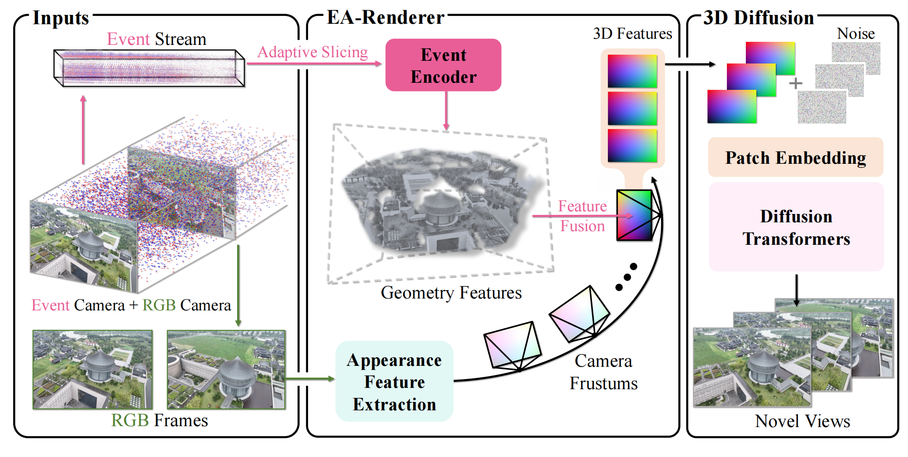

📌 Abstract
We introduce EA3D, an Event-Augmented 3D Diffusion framework for generalizable novel view synthesis from event streams and sparse RGB inputs. Existing approaches either rely solely on RGB frames for generalizable synthesis, which limits their robustness under rapid camera motion, or require per-scene optimization to exploit event data, undermining scalability. EA3D addresses these limitations by jointly leveraging the complementary strengths of asynchronous events and RGB imagery. At its core lies a learnable EA-Renderer, which constructs view-dependent 3D features within target camera frustums by fusing appearance cues from RGB frames with geometric structure extracted from adaptively sliced event voxels. These features condition a 3D-aware diffusion model, enabling high-fidelity and temporally consistent novel view generation along arbitrary camera trajectories. To further enhance scalability and generalization, we develop the Event-DL3DV dataset, a large-scale 3D benchmark pairing diverse synthetic event streams with photorealistic multi-view RGB images and depth maps. Extensive experiments on both real-world and synthetic event data demonstrate that EA3D consistently outperforms optimization-based and generalizable baselines, achieving superior fidelity and cross-scene generalization.
🦄 Methodology
Figure 1: The overall pipeline of EA3D framework.
🚀 Novel View Synthesis Results
Demonstrating robustness under high-speed motion and sparse inputs.